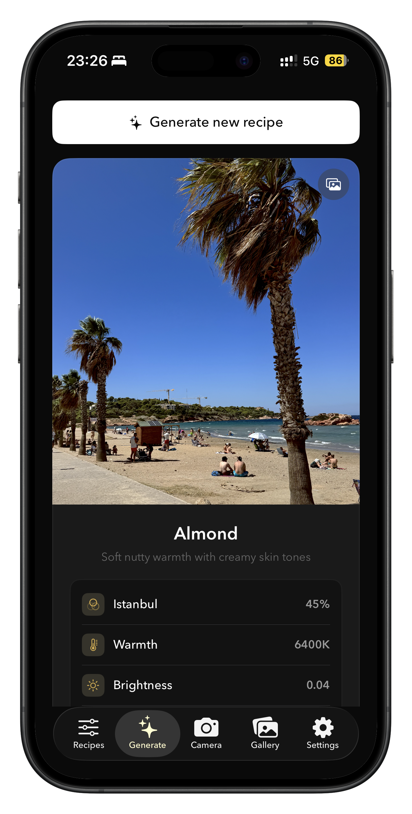
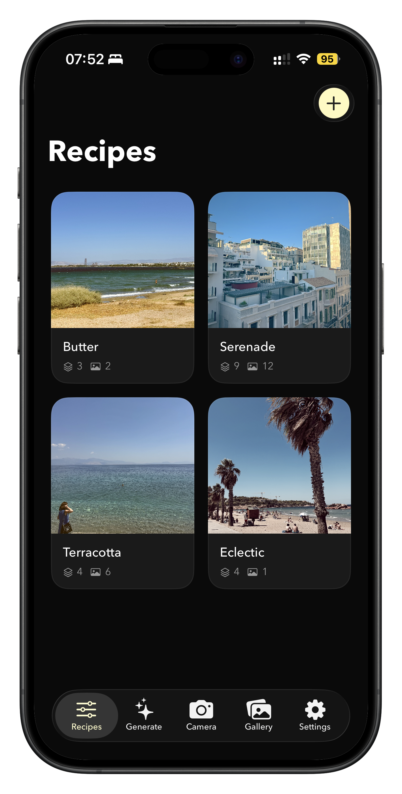
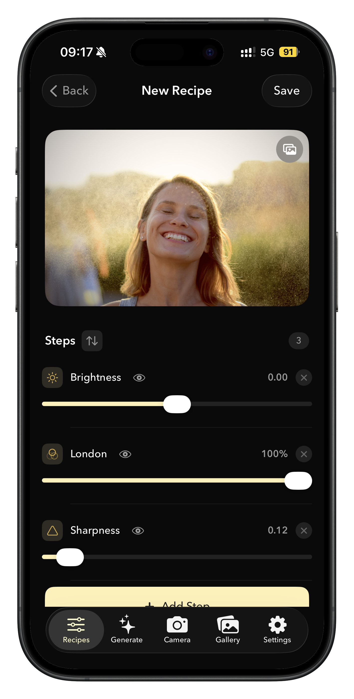
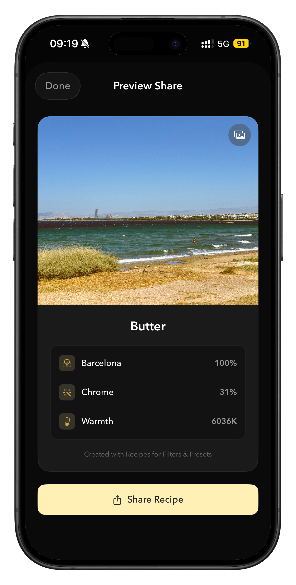
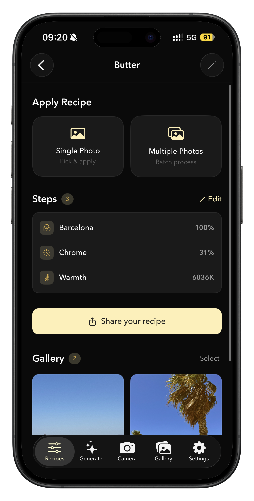
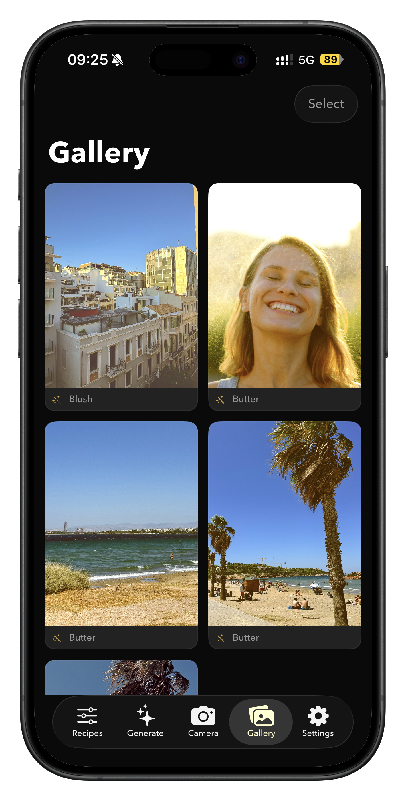

Stop scrolling through hundreds of generic filters. Recipes for Filters & Presets lets you stack multiple filters, presets, and adjustments into reusable recipes — your own signature look that you can apply to any photo with one tap.
Screenshots






Features
Create Your Signature Filter
Combine filters, presets, brightness, contrast, warmth, sharpness, and more into a single recipe. Save it, name it, and use it whenever you want.
Generate New Looks
Feeling stuck? Hit Generate and discover a fresh, randomized recipe. Every tap creates a unique combination you've never seen before.
Batch Apply
Edit a single photo or batch-apply your recipe across your entire camera roll. Same stunning look, every shot, zero effort.
Share Your Recipes
Share your recipe as a beautiful visual card — not just the photo, but the exact steps so your friends can recreate your look.
Built-in Camera
Shoot with your recipe applied in real-time. See the final result before you even press the shutter.
Your Gallery
Every edited photo is saved and organized automatically. Browse your work, revisit your edits, and export anytime.
Stack Unlimited Layers
Unlike flat filter lists, Recipes lets you combine them — like a chef combining ingredients. The result is a look that is entirely yours.
No Strings Attached
No subscriptions. No ads. No watermarks. Dark-themed interface designed for editing.
Perfect For
Content creators building a brand
Create a signature look for your feed. Save it once, apply it to every new photo with one tap. Consistent aesthetic, zero effort.
Photographers editing in batches
Apply the same recipe to dozens of photos from a shoot. Same warmth, same contrast, same sharpness — across every shot.
Anyone tired of generic filters
Stop settling for one-size-fits-all presets. Stack and tweak until you find a look that's uniquely yours, then save it forever.
Explore More Apps
Your photos deserve your own look
Download on the App Store